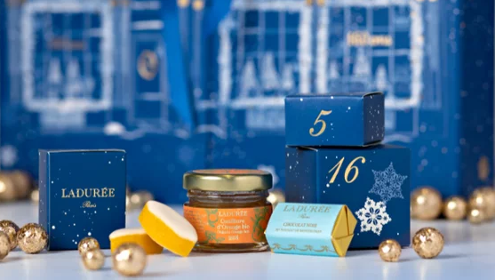
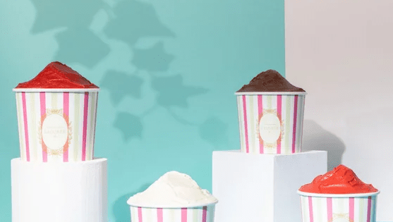
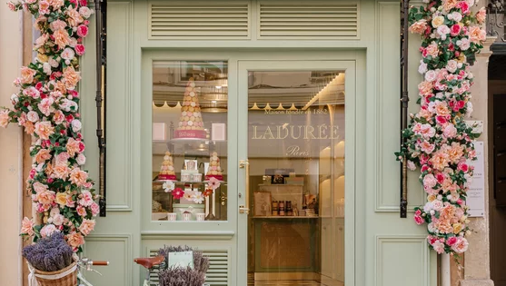
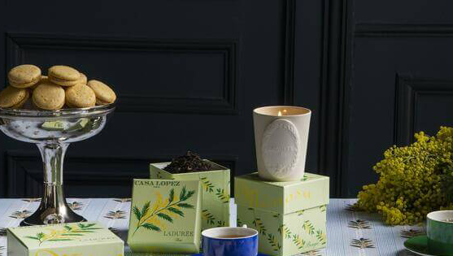
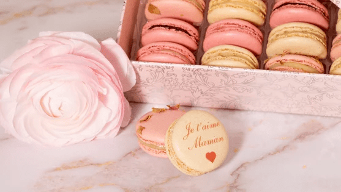
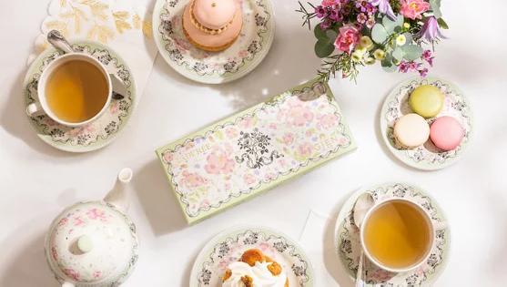
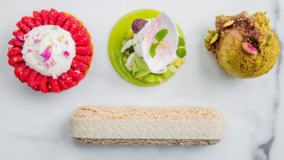
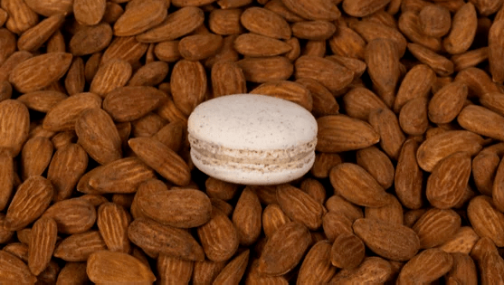

LADURÉE, LA GOURMANDISE ÉLEVÉE AU RANG D’ART DEPUIS 160 ANS.
Depuis les premiers jours et l’ouverture de son iconique boutique de la rue Royale en 1862, notre Maison n’a eu de cesse de réinventer la haute pâtisserie à la française à travers des interprétations délicates et surprenantes de ses grands classiques. Pour les fêtes de fin d’année, Maison Ladurée invite à élever la gourmandise vers de nouveaux sommets. Direction le firmament avec un Noël céleste, habillé de bleu et or. Cette année encore, les fêtes de fin d’année brillent d’un éclat particulier, celui d’un savoir-faire sans cesse renouvelé pour le plus grand plaisir de tous.
LES MACARONS DE NOËL
Cette année, les iconiques macarons Ladurée combinent audace et réconfort, à travers deux saveurs aussi surprenantes que festives. Un macaron couleur et saveur de sapin en édition limitée composé d’une crème de chocolat blanc Ivoire, relevée par une note d’huile essentielle bio de sapin. L’alliance parfaite entre douceur et pointe de fraîcheur. Son compagnon idéal ? Le macaron brioche, tout en rondeur et gourmandise. Sa coque craquante aux amandes effilées cache une garniture d’une grande richesse gustative : chocolat blanc Opalys-Dulcey aux nuances lactées et à la pointe de vanille, raisin de Corinthe, orange, citron et beurre.
Disponibles du 02 novembre au 31 décembre 2022 dans les boutiques Ladurée et sur laduree.fr
LES BUCHES SIGNATURE
Julien Alvarez, chef pâtissier de la maison Ladurée, rend hommage à l’iconique macaron en s’en inspirant pour créer une bûche signature en trompe l’oeil.
Impératrice Amande. Croustillant à l’amande feuilletine et fleur de sel, biscuit fondant à l’amande brute, compotée de mangue soulignée d’un jus de yuzu, crème légère au lait d’amande et sirop d’orgeat, fine coque de chocolat amandes.
Impératrice Amande pour 6-8 personnes 78€
Disponible à partir du 14 décembre 2022 dans les boutiques Ladurée et également en précommande à partir du 30 novembre 2022 sur laduree.fr, livraison à domicile en France (hors Corse) les 22 et 23 décembre. Frais de livraison offerts.
Reine Saint-Honoré. Fond croustillant aux éclats de feuilletage caramélisé, biscuit fondant pâte à choux, crémeux à la vanille torréfiée et sucre muscovado, caramel au beurre demi-sel coulant, crème légère à la vanille de Madagascar, fine coque de chocolat vanillé.
Reine Saint-Honoré pour 6-8 personnes 78€
Reine Saint-Honoré individuelle 11€
Bûche disponible à partir du 14 décembre 2022 et bûche individuelle disponible à partir du 7 décembre 2022 dans les boutiques Ladurée Paris et Ile de France et sur laduree.fr en click & collect.

CETTE ANNÉE ENCORE, L’ATTENTE DE NOËL SERA DOUCE...
Chez Ladurée, la magie de Noël opère avec 24 jours d’avance. 24 jours et autant de gourmandises à découvrir et savourer en famille, grâce au calendrier de l’Avent de la Maison. Cette année, les lignes de la boutique historique de la rue Royale sont à l’honneur. Mais une fois les pans écartés, c’est un ciel étoilé qui vous invite à une immersion onirique et sensorielle, où chaque petite case recèle non pas une, mais plusieurs douceurs délicates à partager : nougats et caramels nature ou parfumés, pâtes de fruits, calissons, bonbons, chocolats, confitures et même pot de miel... Chaque envie y trouvera son bonheur et une délicieuse raison de patienter un jour de plus, jusqu’au soir de Noël et sa révélation finale. Que cache la grande et dernière fenêtre ? Chut ! Le mystère en lui-même est un élément clé de ce plaisir rituel... Ne le dévoilons pas !
Disponible à partir du 14 novembre 2022 dans les boutiques Ladurée et sur laduree.fr 72€

TANDIS QUE LE SOLEIL NOUS RÉCHAUFFE, LADURÉE FAIT SOUFFLER UN VENT DE FRAÎCHEUR SUR CET ÉTÉ
Pour célébrer le retour des beaux jours, des chapeaux de paille et des lunettes de soleil,
Ladurée a imaginé une collection de créations glacées, habillées de très chics rayures
vertes et roses, à la fois rafraîchissantes, gourmandes et artisanales.
Et si l’accessoire indispensable des looks estivaux était signé Ladurée ?
Fondez pour une délicieuse collection glacée
Parce que Ladurée adore jouer avec les couleurs et les parfums pour ses macarons, cette saison la Maison en fait autant avec ses créations glacées. Pour réjouir les yeux et les papilles, 4 parfums de sorbets légers et fruités, 7 onctueuses glaces, toutes artisanales, sans colorants artificiels. Recettes imaginées, fabriquées, dégustées et approuvées par Ladurée. Autre nouveauté, un format encore plus généreux, pour permettre de le partager (ou pas…). Des glaces et des sorbets qui n’attendent que de se faire déguster par les cuillères de gourmands en quête de rafraîchissements.
Le macaron aussi prend ses quartiers d’été
L’emblématique macaron Ladurée se rafraîchit dans deux déclinaisons glacées disponibles tout l’été. Version florale, avec deux coques de macaron rose sublimées d’éclats croquants de rose cristallisées, le tout généreusement garni de glace… à la rose évidemment. Version chocolatée, avec coques de macaron vanille saupoudrées de savoureux éclats de fèves de cacao et garni d’une addictive glace chocolat… Absolument irrésistible.

UN NOUVEL ÉCRIN LADURÉE À SAINT-TROPEZ
A deux pas de l’incontournable port de plaisance et à l’ombre du mythique clocher de la ville, Ladurée s’installe dans l’une des plus anciennes boutiques du village.
Dans cet écrin situé rue Gambetta, en lieu et place de l’ancienne mercerie d’Eugénie, les jolies couleurs pastel des macarons se mêlent aux détails d’inspiration méditerranéenne. Le plafond est ainsi pensé comme un parasol intérieur et le papier peint est illustré de palmiers.Pour une expérience gourmande et conviviale, le service se fait au côté de client, pour accompagner son choix parmi la palette de couleurs et de saveurs.Pour les beaux jours et la saison estivale, Ladurée Saint-Tropez propose également de délicieux parfums de glaces et sorbets, généreusement servis dans de jolis pots aux couleurs de la maison. Une gourmandise pleine de fraicheur à déguster lors d’une balade sur le port sous le soleil tropézien.Enfin, cette nouvelle boutique, la 38ème pour la Maison Ladurée en France, propose une collection de produits exclusifs et en édition limitée : un macaron lavande reprenant le visuel du clocher emblématique de Saint -Tropez et une estampille qui viendra habiller tous les coffrets, un cadeau souvenir idéal à offrir ou à s’offrir.Ouverture le 8 juillet 2022, 20 rue Gambetta 83 990 Saint Tropez

UN TEA TIME FÊTE DES MÈRES SIGNÉ LADURÉE
A l'occasion de la fête des mères, nos restaurants vous accueillent du vendredi 27 au dimanche 29 mai pour un tea-time signé Ladurée. Une expérience mère-fille ou fils, et de jolis moments gourmands passés ensemble, se révèlent être les plus précieux des cadeaux. Rituel chic par excellence, Ladurée a choisi de servir dans ses restaurants un tea-time à l’anglaise avec une touche on ne peut plus parisienne :
une part de cake
deux fingers sandwichs
deux macarons
une pâtisserie à choisir parmi les créations de Julien Alvarez
un thé d’exception ou autre boisson chaude.
Ultime attention : les mamans repartiront avec un macaron « Je t’aime Maman » présenté dans l’écrin vert iconique Ladurée.

FÊTE DES MÈRES : DES MACARONS POUR DIRE JE T’AIME
Les macarons addicts ne résisteront pas au potentiel gourmand des créations pâtissières les plus célèbres de Paris : macarons vanille imprimé « Je t’aime Maman » à la rose cardamome, fleur d’oranger, framboise gingembre et rose. Ils se lovent dans le ravissant coffret arabesque signature Ladurée.
Un macaron à message
Quelques mots d’amour valent toutes les déclarations, à l’instar de ce macaron à la vanille sur lequel est délicatement inscrit « Je t’aime Maman ».

GIEN X LADURÉE : LA COLLAB’ LIFESTYLE QUI A TOUT BON
C’est la collab’ la plus inspirée de la saison qui célèbre les plus beaux savoir-faire français !
La Faïencerie de Gien et la Maison Ladurée ont uni leur expérience pour créer une capsule d’art de la table, la Maison Ladurée et la mythique faïencerie Gien déclinent un service très désirable qui semble tout droit sorti d’un tea-time à Versailles. Une faïence imaginée sur un fond poétique aux couleurs pastel mélangeant roses et violettes, fleurs emblématiques de la Maison Ladurée, structurée par une double bordure de bouquets de roses enrubannés et de perles, ainsi qu’un bouquet central issus des archives de la Faïencerie de Gien datant du XIXème siècle. Choisir son thé, l’accompagner d’une exquise pâtisserie et prendre plaisir à déguster, le tout dans un service délicat, créatif et empreint de l’histoire de deux maisons centenaires.
En hommage à Madame de Pompadour, la favorite, femme d’arts et de lettres, amatrice d’architecture, de décoration et d’art floral, cette collection nous transporte au XVIIIème siècle avec légèreté et poésie.

LADURÉE ET SON CHEF PÂTISSIER JULIEN ALVAREZ RÉGALENT LE SALON TASTE OF PARIS
Organisé du 12 au 15 mai 2022 au Grand Palais Ephémère, le salon « Taste of Paris » est le rendez-vous incontournable de tous les amateurs de gastronomie. La Maison Ladurée y sera présente, accompagnée de son Chef Pâtissier Julien Alvarez. Nous vous invitons à venir découvrir nos créations exclusivement imaginées pour l’événement et suivre les coulisses des recettes.
Tout au long du salon rendez-vous sur le stand Ladurée
A découvrir et à déguster sur place, 4 nouvelles pâtisseries particulièrement gourmandes : « L’Eclair vanille » avec sa languette chocolat blanc Opalys d’une élégance rare et au parfum aromatique saisissant ; le délicieux « Kiwi de l’Adour, pomme verte, herbes fraîches » avec sa crème légère au yaourt vanillé d’une douce fraîcheur ; la surprenante « Pépite pistache fleur d’Oranger » avec son cœur praliné coulant et ultra réconfortant ; et enfin la délicate « Tartelette framboise, doux parfum rose et miel » avec ses framboises fraîches et ses saveurs florales. Créations iconiques de la Maison, les macarons Ladurée seront bien entendu à l’honneur et disponibles dans leurs délicats coffrets aux couleurs tendres.

LADUREE, 160 ANS D'HISTOIRE GOURMANDE
C’est un incroyable destin qu’allait connaître la petite boulangerie créée en 1862 au 16 rue Royale à Paris par Louis-Ernest Ladurée et son épouse Jeanne Souchard.
Nullement abattu par un incendie qui détruit l’établissement, Louis-Ernest Ladurée fait alors reconstruire en 1871 la boutique et confie au peintre et illustrateur de l’époque, Jules Chéret, également auteur d’affiches célèbres (Musée Grévin, Grands magasins…) le soin de décorer le lieu dans un style poétique et précieux. Murs peints en vert céladon qui deviendra la couleur emblématique de l’enseigne, plafond décoré de ciel et de chérubins, ange pâtisser figurant au-dessus d’une porte et qui deviendra l’emblème de le maison … tout est légèreté, féminité et poésie.
Jeanne a alors l’idée avant-gardiste d’ajouter un espace de dégustation au sein de la boutique, mélangeant ainsi café parisien en vogue et pâtisserie. Le lieu devient alors le rendez-vous élégant et gourmand de la capitale et surtout le premier salon de thé où les femmes peuvent se rendre seules. Une véritable révolution pour l’époque.
Nouvelle époque
En 1993, Ladurée change de cap sous l’égide de Francis Holder, président du groupe Holder et de son fils David, qui rachètent l’enseigne et lui donneront une aura internationale.
Le macaron, se résumant à deux coques nées d’un mélange de poudre d’amande, de sucre glace et de blanc d’oeuf réunis ensuite par une délicieuse ganache, devient le petit gâteau phare du salon de thé, tout comme la religieuse à la rose, le Saint-Honoré rose-framboise, le croissant fourré aux amandes… côté carte salée, le club sandwich, le vol au vent et l’omelette Ladurée deviennent des incontournables.
Parallèlement aux douceurs, Ladurée a également inscrit son histoire dans celle des coffrets. Car ici la plus petite boite est un écrin précieux qu’il est impossible de jeter. On les garde, on les collectionne, on leur offre souvent une seconde vie.
Dans chaque salon de thé, les décors sophistiqués et poétiques véhiculent au bout du monde la magie de Paris. Car chez Ladurée, le décor est une fête. Chacun raconte une histoire gourmande. Pompons, velours, moulures, tableaux anciens… composent des univers de grande maison, réinterprétés à partir des trois grands âges de l’art décoratif, l’antiquité, le XVIIIe siècle et le Second Empire.
C’est ainsi qu’après le salon de la rue Royale, la maison ouvre en 1997 un second salon sur les Champs-Elysées décoré par Jacques Garcia dans le style Second Empire. Suivra en 2002 un nouveau lieu, Rive Gauche cette fois-ci, rue Bonaparte, dans l’ancienne boutique de la décoratrice Madeleine Castaing. D’autres salons verront le jour, de Londres à Tokyo en passant par New York. Chaque fois des lieux qui incarnent l’âme de la maison.
2022, une reconversion dans la continuité
La maison fête en 2022 ses 160 ans. Pour célébrer cet anniversaire, le chef de la création sucrée Julien Alvarez nous propose de plonger dans les archives de la maison et de réinterpréter quelques-unes des recettes iconiques qui en ont fait sa renommée, comme le Macaron pomme caramel, l’Elysée, le Succès praliné, le Baiser fraise-coquelicot, la Tarte Ananas rôti, le Bayadère, le articlein… Un macaron, le macaron originel à l’amande amère, une version brute et savoureuse de la pâtisserie reine de la maison, sera également proposé tout au long de l’année.
Onze pâtisseries emblématiques vont renaitre en 2022, dans le respect des produits de saisons et des gestes d’antan, afin de proposer à nos hôtes une offre de gâteaux et entremets qui représente la créativité et l’excellence de la maison. L’occasion pour nos clients de découvrir ou de redécouvrir des recettes gourmandes et iconiques. Remises au goût du jour par notre Chef.
Forte de son patrimoine extraordinaire et de son audace toujours renouvelée, la maison Ladurée demeure plus que jamais une enseigne mythique, une maison de luxe qui continue à véhiculer dans le monde sa vision de la gourmandise, de l’esthétique et de l’élégance à la française.
JULIEN ALVAREZ REJOINT LA MAISON LADURÉE
Après The Peninsula Paris, le Café Pouchkine et le prestigieux palace Parisien Le Bristol, Julien ALVAREZ rejoint la Maison Ladurée en qualité de Chef international de la création pâtissière. Originaire de Bergerac, fils d’un père cuisinier qui lui fait découvrir l’univers de la pâtisserie, c’est auprès de Monsieur Dieumegard, aujourd’hui considéré comme son Mentor, que son intérêt pour les gâteaux va se transformer en véritable passion.
Doté d’une grande créativité et féru de travail, il intègre l’équipe espagnole de pâtisserie aux championnats du monde. Après avoir œuvré passionnément, il obtient le titre de Champion du Monde de Pâtisserie en 2011 puis Meilleur Espoir Pâtissier en 2014. Sa carrière de grand Chef Pâtissier débute lorsqu’il intègre The Peninsula à Paris en 2014 puis lorsqu’il devient Chef Pâtissier Exécutif du Café Pouchkine en 2016. Mais c’est au Bristol, aux côtés d’Éric Frechon, que sa renommée s’installe et qu’il devient l’un des plus talentueux chef de sa génération.Une nouvelle aventure commence pour lui chez Ladurée et nous sommes fiers de l’accueillir. "J’ai toujours eu une admiration particulière pour la Maison Ladurée. Elle symbolise un héritage de savoir-faires historiques et contribue ainsi à la promotion du patrimoine français en France mais aussi à l’international. Je suis aujourd’hui très fier et honoré d’incarner le nouveau visage de la Maison, de contribuer à mon tour à son rayonnement." Julien Alvarez